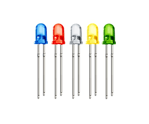

Na eletrônica, elementos como resistores, LEDs e displays de sete segmentos desempenham papéis importantes no controle e na exibição de informações. Com o Arduino, é possível desenvolver projetos interativos ao conectar sensores e LEDs, controlando-os por programação. O multímetro é uma ferramenta indispensável para medir tensão, corrente e resistência em circuitos, enquanto o Tinkercad facilita simulações virtuais de circuitos antes de sua construção física. Esses instrumentos são essenciais para a realização de projetos eletrônicos práticos.
Resistores e código de Cores
Resistores são dispositivos elétricos projetados para restringir o fluxo de corrente em um circuito. Eles possuem variados valores de resistência, medidos em ohms (Ω). Normalmente, o valor de resistência é indicado por faixas coloridas no corpo do resistor, conforme um código de cores padrão. Cada cor corresponde a um número, e, analisando a sequência dessas faixas, é possível identificar o valor da resistência e a tolerância do componente.
Diodos
LED's
O LED (diodo emissor de luz) é um componente eletrônico que gera luz quando uma corrente elétrica o atravessa. Ele é amplamente utilizado como indicador visual em diversos tipos de circuitos devido à sua eficiência e durabilidade.
Display de 7 segmentos
O display de sete segmentos é formado por sete LEDs organizados em forma de um número oito, possibilitando a exibição de dígitos de 0 a 9. Esse tipo de display é amplamente utilizado em dispositivos eletrônicos, como calculadoras e relógios digitais, para apresentar informações numéricas de maneira clara e simples.
TinkerCad
O Tinkercad é uma plataforma online que permite desenvolver projetos 3D e realizar simulações de circuitos eletrônicos. Um exemplo prático seria montar um circuito simples com um LED, um resistor e um potenciômetro, onde o LED acende ou apaga conforme o ajuste do potenciômetro. A plataforma oferece uma representação visual realista do circuito, possibilitando a captura de tela para demonstrar a organização dos componentes e suas conexões.
Placa Arduino
A placa Arduino é uma plataforma de prototipagem eletrônica baseada em hardware e software de código aberto, amplamente utilizada para o desenvolvimento de projetos que integram sensores, LEDs, motores e diversos outros componentes. Entre as versões mais populares estão o Arduino Uno e o Arduino Mega, cada uma com características que atendem a diferentes necessidades de projeto.
IDE Arduimo
O IDE Arduino é o ambiente de desenvolvimento integrado utilizado para escrever, compilar e transferir códigos para a placa Arduino. Um exemplo básico de programa é o "Blink", que faz um LED piscar em intervalos regulares. Esse projeto simples é perfeito para iniciantes aprenderem os fundamentos do funcionamento do Arduino.
Entradas
Entrada analógica no Arduino
As entradas analógicas no Arduino permitem que a placa leia sinais variáveis, como a tensão proveniente de sensores de luz ou temperatura. A placa converte esse sinal analógico, que varia de forma contínua, em um valor digital, que vai de 0 a 1023. Isso facilita a interpretação e o processamento das informações captadas pelos sensores.
Entrada digital no Arduino
As entradas digitais no Arduino são projetadas para ler sinais em dois estados: alto (HIGH, 5V) ou baixo (LOW, 0V). Elas são ideais para interpretar sinais binários, como o pressionamento de botões, onde o sinal é simples e só precisa desses dois estados para funcionar corretamente.
Saídas
Saída analógica no Arduino (PWM)
O Arduino não possui uma saída analógica real, mas utiliza saídas PWM (modulação por largura de pulso), que simulam uma saída analógica. Com a técnica de PWM, a placa pode controlar a intensidade de LEDs ou ajustar a velocidade de motores, variando o ciclo de trabalho do sinal, o que dá a impressão de uma saída contínua.
Saída digital no Arduino
As saídas digitais no Arduino enviam sinais em dois estados (HIGH ou LOW), e são utilizadas para ligar ou desligar componentes simples, como LEDs, ou para ativar relés, permitindo o controle de dispositivos maiores e mais complexos.
O que é e pra que serve o Multímetro?
Um multímetro é um instrumento de medição usado para verificar tensão (V), corrente (A), resistência (Ω), e outras características elétricas. Ele é essencial em eletrônica para diagnósticos e verificações de circuito.
Alguns multímetros avançados medem capacitância (F), frequência (Hz), entre outras grandezas.